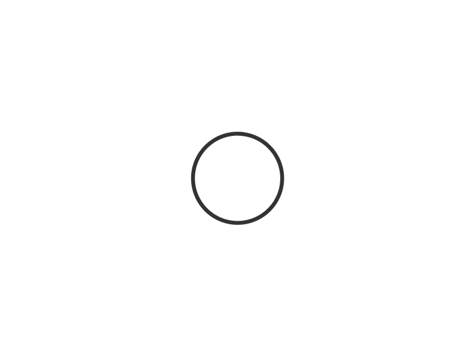

<div *ngIf="showMassgeToUser">
    <app-pop-up>
      <div body>
        <app-massge-to-user [kindOfMassage]="kindOfMassage" [massgeUserHeader]="massgeUserHeader"
          [massgeUserBody1]="massgeUserBody" [massgeUserBody2]="massgeUserFooter" (clickYes)="clickYes()"
          (clickNo)="clickNo($event)" [ifButton]="true" [textOfBtnNo]="'לא, איני רוצה למחוק את הרשומה'" [textOfBtnYes]="'כן, אני רוצה למחוק את הרשומה'" ></app-massge-to-user>
      </div>
    </app-pop-up>
  </div>
  
<app-pop-up-for-image *ngIf="ifShowSpinner" >
  <div body class="body-content">
    
  </div>
</app-pop-up-for-image>